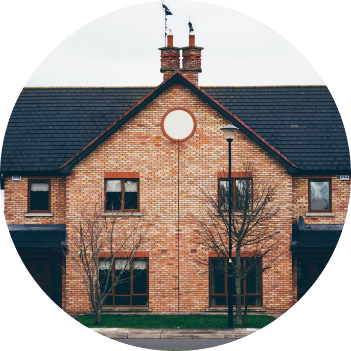
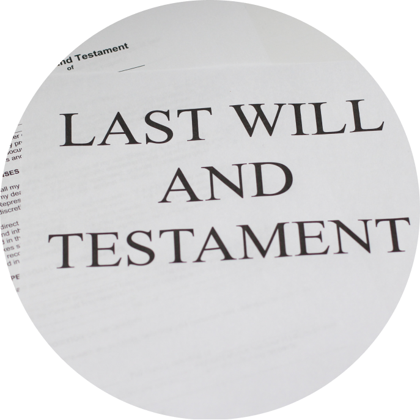
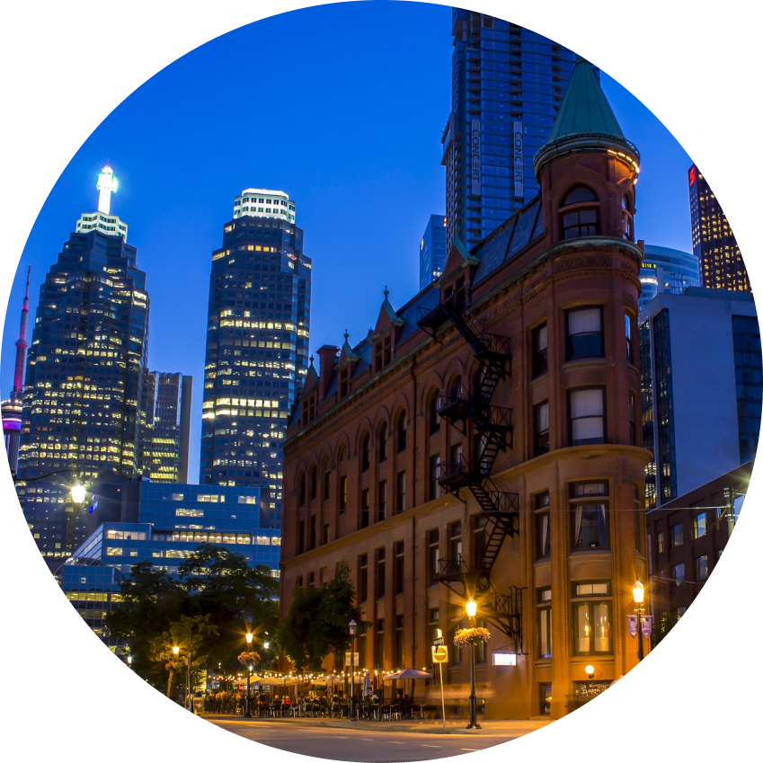
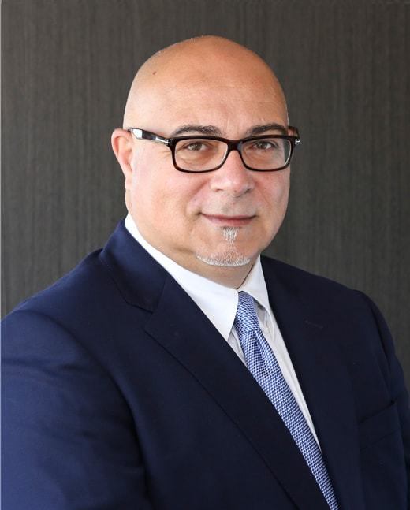
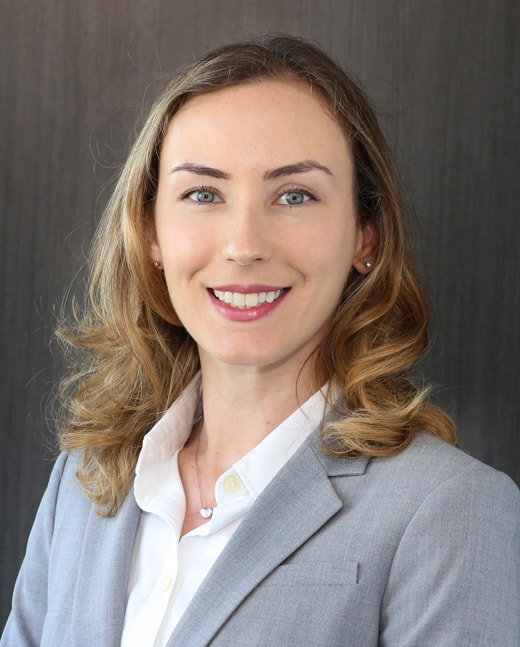
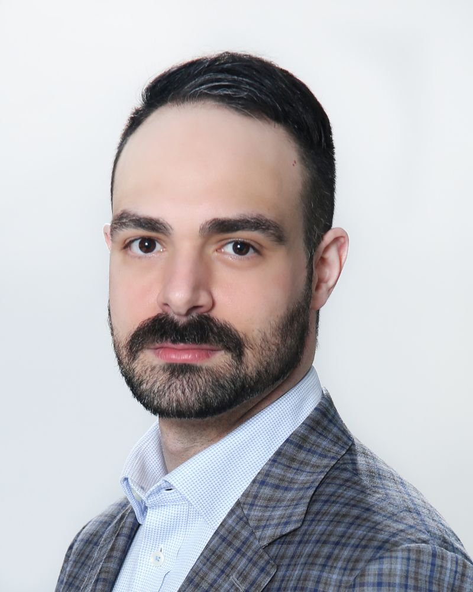
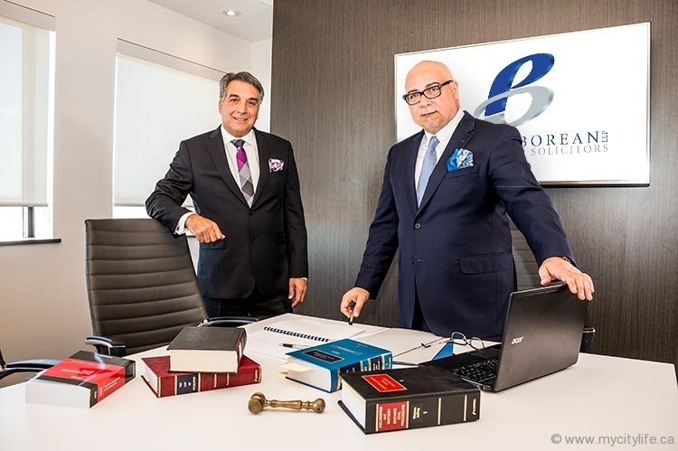

Barristers and Solicitors · Vaughan
Expertise You Can Count On
Parente Borean LLP is a full-service law practice in Vaughan, trusted for legal services since 1991.
Areas of practice

Real Estate Law
Buying, selling, financing, and development.
Civil Litigation
Contracts, debt recovery, and disputes.

Wills & Estates
Wills, probate, and estate planning.

Family Law
Separation, support, and parenting.
Business & Commercial
Companies, deals, and agreements.

Municipal Law
Planning, zoning, and approvals.
What clients say
Very professional and pleasant. A law firm that is well known and respected in the community.
I’ve been dealing Don Parente for many years now because he’s as honest as the day is long, very intelligent and extremely patient.
Our lawyers

Donato Parente
Partner
Donato Parente, known to most as Don, is one of the founding partners, and has been serving clients in Vaughan and the surrounding area since 1988.
Gerard C. Borean
Partner
Gerard C. Borean is a founding partner. In 1985 he obtained his Bachelor of Laws from Osgoode Hall Law School and was called to the Bar of Ontario in 1987.

Gillian Gondosch
Associate
Gillian Gondosch has a broad civil litigation practice, helping clients with contracts, debt collection, construction liens, and provincial offences.

Lucas Parente
Associate
Lucas Parente received his Honours Bachelor of Arts from York University and his Juris Doctor from Bond University in Australia, graduating with Honours.

We’re dedicated to making legal services approachable.
Parente Borean LLP was founded in 1991 in Vaughan and has been a trusted name in the GTA for more than 30 years.